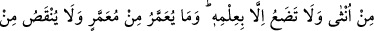
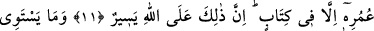
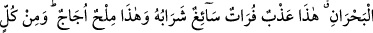
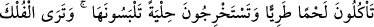
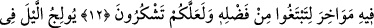
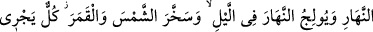
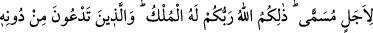
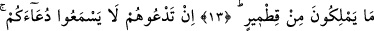
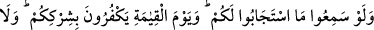
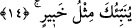

HİÇBİR ŞEY
O’NUN BİLGİSİ DIŞINDA
KALMAZ
11. Allah sizi (önce) topraktan, sonra meniden yarattı. Sonra sizi çiftler (erkek-
dişi) kıldı. O’nun bilgisi olmadan hiç bir dişi ne gebe kalır ne de doğurur. Bir canlıya
ömür verilmesi de, onun ömründen azaltılması da mutlaka bir kitaptadır. Şüphesiz
bunlar, Allah’a kolaydır.
12. İki deniz birbirine eşit olmaz. Bu tatlıdır, susuzluğu keser, içilmesi kolaydır. Şu
da tuzludur, acıdır (boğazı yakar). Hepsinden de taze et (balık) yersiniz ve
giyeceğiniz süs eşyası çıkarırsınız. Allah’ın lütfundan (nasibinizi) arayıp da
şükretmeniz için gemilerin, denizi yarıp gittiğini görürsün.
13. Allah, geceyi gündüzün içine sokar, gündüzü de gecenin içine sokar; güneş ve
ayı emri altına almıştır. Her biri belirtilmiş bir süreye kadar akıp gider. İşte (bütün
bunları yapan) Rabbiniz Allah’tır. Mülk O’nundur. O’nu bırakıp da kendilerine
taptıklarınız ise, bir çekirdek kabuğuna bile sahip değillerdir.
14. Eğer onları (putları) çağırırsanız, sizin çağırmanızı işitmezler. Faraza işitseler
bile, size cevap veremezler. Kıyâmet günü de sizin ortak koşmanızı reddederler.
(Bu gerçeği) sana, her şeyden haberi olan (Allah) gibi hiç kimse haber veremez.